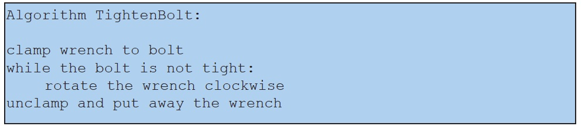
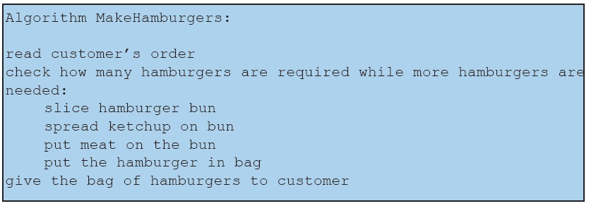

Algorithms can contain more than just actions to take; they can also contain information on when to perform a given action, or even how many times to perform an action. Consider the following straightforward algorithm for tightening a bolt.
Notice that the line while the bolt is not tight is not, in fact, an instruction to do something; instead, it is indicating the condition under which we should continue to perform the action on the following line, namely, rotating the wrench. We will call lines such as the former a control statement. Control statements allow us to create algorithms that take only a few lines of text to write yet can describe complex behaviour.
Notice also that the line “rotate the wrench clockwise” is indented - a visual indication that it is this action that should be repeated while the bolt is not tight. By contrast, the line “unclamp and put away wrench” is not indented to show that this action should only be done once after we are done tightening the bolt. With algorithms written for humans, they can often infer many things from context. For example, a human intuitively knows that putting away a wrench multiple times would be rather silly. With computers, however, we have to be very precise about the scope of control statements so that the computer knows which action(s) the control statement covers.
We can, of course, have multiple statements under the scope of the same control statement, as shown in the following example:
Here we have multiple statements at the same level of indentation and subject to the same control statement. We call a collection of statements like this a block, and it’s the indentation that tells us which statements belong in the block. As a result, when reading algorithms, we should be aware that indentation is probably not arbitrary or accidental, but it conveys specific meaning.